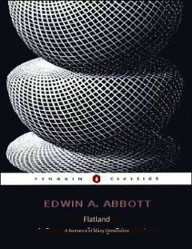

FIkki o'lchovli dunyoda yashovchi shakllar orqali jamiyat va geometriyani o'rganuvchi roman.
Flatlandiya — Edwin Abbott tomonidan yozilgan ilmiy-fantastik roman bo'lib, ikki o'lchovli dunyoda yashovchi geometrik shakllar hayotini tasvirlaydi. Roman ko'p o'lchovli geometriya va fazoviy idrok mavzularini o'rganish bilan birga Viktoriya davri jamiyatining ijtimoiy ierarxiyasini satirik tarzda tanqid qiladi. Ushbu kitob o'zbek tiliga tarjima qilingan.